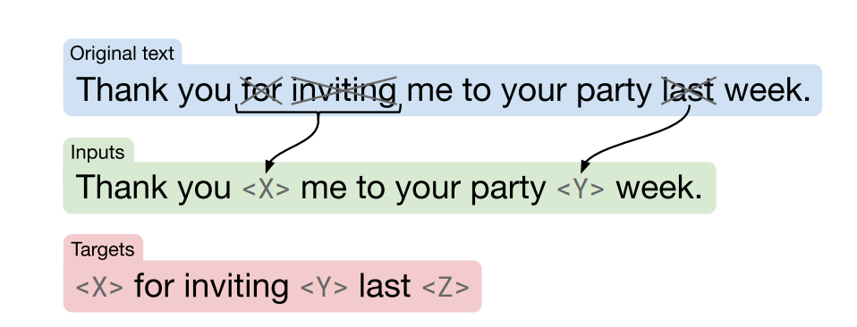

Assignment 3: Question Answering#
Welcome to the third assignment of course 4. In this assignment you will explore question answering. You will implement the “Text to Text Transfer from Transformers” (better known as T5). Since you implemented transformers from scratch last week you will now be able to use them.
!pip install sentencepiece
Requirement already satisfied: sentencepiece in c:\users\sangouda\appdata\local\anaconda3\lib\site-packages (0.2.0)
Overview#
This assignment will be different from the two previous ones. Due to memory constraints of this environment and for the sake of time, your model will be trained with small datasets, so you won’t get models that you could use in production but you will gain the necessary knowledge about how the Generative Language models are trained and used. Also you won’t spend too much time with the architecture of the models but you will instead take a model that is pre-trained on a larger dataset and fine tune it to get better results.
After completing this labs you will:
Understand how the C4 dataset is structured.
Pretrain a transformer model using a Masked Language Model.
Understand how the “Text to Text Transfer from Transformers” or T5 model works.
Fine tune the T5 model for Question answering
Before getting started take some time to read the following tips:
TIPS FOR SUCCESSFUL GRADING OF YOUR ASSIGNMENT:#
All cells are frozen except for the ones where you need to submit your solutions.
You can add new cells to experiment but these will be omitted by the grader, so don’t rely on newly created cells to host your solution code, use the provided places for this.
You can add the comment # grade-up-to-here in any graded cell to signal the grader that it must only evaluate up to that point. This is helpful if you want to check if you are on the right track even if you are not done with the whole assignment. Be sure to remember to delete the comment afterwards!
To submit your notebook, save it and then click on the blue submit button at the beginning of the page.
Importing the Packages#
Let’s start by importing all the required libraries.
import os
os.environ['TF_CPP_MIN_LOG_LEVEL'] = '3'
import traceback
import time
import json
from termcolor import colored
import string
import textwrap
import itertools
import numpy as np
import sentencepiece as spm
import tensorflow as tf
import transformer_utils
import utils
# Will come in handy later
wrapper = textwrap.TextWrapper(width=70)
# Set random seed
np.random.seed(42)
# import w3_unittest
---------------------------------------------------------------------------
ModuleNotFoundError Traceback (most recent call last)
Cell In[78], line 1
----> 1 import w3_unittest
File c:\Github\Coursera_Materials\coursera_notes\NLP\C4_W3\w3_unittest.py:10
8 import tensorflow as tf
9 from tensorflow.keras.layers import MultiHeadAttention, ReLU, Attention, LayerNormalization, Input
---> 10 import tensorflow_text as tf_text
12 from dlai_grader.grading import test_case, object_to_grade
13 from types import ModuleType, FunctionType
ModuleNotFoundError: No module named 'tensorflow_text'
1 - Prepare the data for pretraining T5#
1.1 - Pre-Training Objective#
In the initial phase of training a T5 model for a Question Answering task, the pre-training process involves leveraging a masked language model (MLM) on a very large dataset, such as the C4 dataset. The objective is to allow the model to learn contextualized representations of words and phrases, fostering a deeper understanding of language semantics. To initiate pre-training, it is essential to employ the Transformer architecture, which forms the backbone of T5. The Transformer’s self-attention mechanism enables the model to weigh different parts of the input sequence dynamically, capturing long-range dependencies effectively.
Before delving into pre-training, thorough data preprocessing is crucial. The C4 dataset, a diverse and extensive collection of web pages, provides a rich source for language understanding tasks. The dataset needs to be tokenized into smaller units, such as subwords or words, to facilitate model input. Additionally, the text is often segmented into fixed-length sequences or batches, optimizing computational efficiency during training.
For the masked language modeling objective, a percentage of the tokenized input is randomly masked, and the model is trained to predict the original content of these masked tokens. This process encourages the T5 model to grasp contextual relationships between words and phrases, enhancing its ability to generate coherent and contextually appropriate responses during downstream tasks like question answering.
In summary, the pre-training of the T5 model involves utilizing the Transformer architecture on a sizable dataset like C4, coupled with meticulous data preprocessing to convert raw text into a format suitable for training. The incorporation of a masked language modeling objective ensures that the model learns robust contextual representations, laying a solid foundation for subsequent fine-tuning on specific tasks such as question answering.
Note: The word “mask” will be used throughout this assignment in context of hiding/removing word(s)
You will be implementing the Masked language model (MLM) as shown in the following image.

Assume you have the following text: Thank you for inviting me to your party last week
Now as input you will mask the words in red in the text:
Input: Thank you X me to your party Y week.
Output: The model should predict the words(s) for X and Y.
[EOS] will be used to mark the end of the target sequence.
1.2 - C4 Dataset#
The C4 dataset, also known as the Common Crawl C4 (Common Crawl Corpus C4), is a large-scale dataset of web pages collected by the Common Crawl organization. It is commonly used for various natural language processing tasks and machine learning research. Each sample in the C4 dataset follows a consistent format, making it suitable for pretraining models like BERT. Here’s a short explanation and description of the C4 dataset:
Format: Each sample in the C4 dataset is represented as a JSON object, containing several key-value pairs.
Content: The ‘text’ field in each sample contains the actual text content extracted from web pages. This text often includes a wide range of topics and writing styles, making it diverse and suitable for training language models.
Metadata: The dataset includes metadata such as ‘content-length,’ ‘content-type,’ ‘timestamp,’ and ‘url,’ providing additional information about each web page. ‘Content-length’ specifies the length of the content, ‘content-type’ describes the type of content (e.g., ‘text/plain’), ‘timestamp’ indicates when the web page was crawled, and ‘url’ provides the source URL of the web page.
Applications: The C4 dataset is commonly used for training and fine-tuning large-scale language models, such as BERT. It serves as a valuable resource for tasks like text classification, named entity recognition, question answering, and more.
Size: The C4 dataset is containing more than 800 GiB of text data, making it suitable for training models with billions of parameters.
Run the cell below to see how the C4 dataset looks like.
# Load example jsons
with open('data/c4-en-10k.jsonl', 'r') as file:
example_jsons = [json.loads(line.strip()) for line in file]
# Printing the examples to see how the data looks like
for i in range(5):
print(f'example number {i+1}: \n\n{example_jsons[i]} \n')
example number 1:
{'text': 'Beginners BBQ Class Taking Place in Missoula!\nDo you want to get better at making delicious BBQ? You will have the opportunity, put this on your calendar now. Thursday, September 22nd join World Class BBQ Champion, Tony Balay from Lonestar Smoke Rangers. He will be teaching a beginner level class for everyone who wants to get better with their culinary skills.\nHe will teach you everything you need to know to compete in a KCBS BBQ competition, including techniques, recipes, timelines, meat selection and trimming, plus smoker and fire information.\nThe cost to be in the class is $35 per person, and for spectators it is free. Included in the cost will be either a t-shirt or apron and you will be tasting samples of each meat that is prepared.'}
example number 2:
{'text': 'Discussion in \'Mac OS X Lion (10.7)\' started by axboi87, Jan 20, 2012.\nI\'ve got a 500gb internal drive and a 240gb SSD.\nWhen trying to restore using disk utility i\'m given the error "Not enough space on disk ____ to restore"\nBut I shouldn\'t have to do that!!!\nAny ideas or workarounds before resorting to the above?\nUse Carbon Copy Cloner to copy one drive to the other. I\'ve done this several times going from larger HDD to smaller SSD and I wound up with a bootable SSD drive. One step you have to remember not to skip is to use Disk Utility to partition the SSD as GUID partition scheme HFS+ before doing the clone. If it came Apple Partition Scheme, even if you let CCC do the clone, the resulting drive won\'t be bootable. CCC usually works in "file mode" and it can easily copy a larger drive (that\'s mostly empty) onto a smaller drive. If you tell CCC to clone a drive you did NOT boot from, it can work in block copy mode where the destination drive must be the same size or larger than the drive you are cloning from (if I recall).\nI\'ve actually done this somehow on Disk Utility several times (booting from a different drive (or even the dvd) so not running disk utility from the drive your cloning) and had it work just fine from larger to smaller bootable clone. Definitely format the drive cloning to first, as bootable Apple etc..\nThanks for pointing this out. My only experience using DU to go larger to smaller was when I was trying to make a Lion install stick and I was unable to restore InstallESD.dmg to a 4 GB USB stick but of course the reason that wouldn\'t fit is there was slightly more than 4 GB of data.'}
example number 3:
{'text': 'Foil plaid lycra and spandex shortall with metallic slinky insets. Attached metallic elastic belt with O-ring. Headband included. Great hip hop or jazz dance costume. Made in the USA.'}
example number 4:
{'text': "How many backlinks per day for new site?\nDiscussion in 'Black Hat SEO' started by Omoplata, Dec 3, 2010.\n1) for a newly created site, what's the max # backlinks per day I should do to be safe?\n2) how long do I have to let my site age before I can start making more blinks?\nI did about 6000 forum profiles every 24 hours for 10 days for one of my sites which had a brand new domain.\nThere is three backlinks for every of these forum profile so thats 18 000 backlinks every 24 hours and nothing happened in terms of being penalized or sandboxed. This is now maybe 3 months ago and the site is ranking on first page for a lot of my targeted keywords.\nbuild more you can in starting but do manual submission and not spammy type means manual + relevant to the post.. then after 1 month you can make a big blast..\nWow, dude, you built 18k backlinks a day on a brand new site? How quickly did you rank up? What kind of competition/searches did those keywords have?"}
example number 5:
{'text': 'The Denver Board of Education opened the 2017-18 school year with an update on projects that include new construction, upgrades, heat mitigation and quality learning environments.\nWe are excited that Denver students will be the beneficiaries of a four year, $572 million General Obligation Bond. Since the passage of the bond, our construction team has worked to schedule the projects over the four-year term of the bond.\nDenver voters on Tuesday approved bond and mill funding measures for students in Denver Public Schools, agreeing to invest $572 million in bond funding to build and improve schools and $56.6 million in operating dollars to support proven initiatives, such as early literacy.\nDenver voters say yes to bond and mill levy funding support for DPS students and schools. Click to learn more about the details of the voter-approved bond measure.\nDenver voters on Nov. 8 approved bond and mill funding measures for DPS students and schools. Learn more about what’s included in the mill levy measure.'}
1.3 - Process C4#
For the purpose of pretaining the T5 model, you will only use the content of each entry. In the following code, you filter only the field text from all the entries in the dataset. This is the data that you will use to create the inputs and targets of your language model.
# Grab text field from dictionary
natural_language_texts = [example_json['text'] for example_json in example_jsons]
# Print the first text example
print(natural_language_texts[0])
Beginners BBQ Class Taking Place in Missoula!
Do you want to get better at making delicious BBQ? You will have the opportunity, put this on your calendar now. Thursday, September 22nd join World Class BBQ Champion, Tony Balay from Lonestar Smoke Rangers. He will be teaching a beginner level class for everyone who wants to get better with their culinary skills.
He will teach you everything you need to know to compete in a KCBS BBQ competition, including techniques, recipes, timelines, meat selection and trimming, plus smoker and fire information.
The cost to be in the class is $35 per person, and for spectators it is free. Included in the cost will be either a t-shirt or apron and you will be tasting samples of each meat that is prepared.
1.4 - Decode to Natural Language#
The SentencePieceTokenizer, used in the code snippet, tokenizes text into subword units, enhancing handling of complex word structures, out-of-vocabulary words, and multilingual support. It simplifies preprocessing, ensures consistent tokenization, and seamlessly integrates with machine learning frameworks.
In this task, a SentencePiece model is loaded from a file, which is used to tokenize text into subwords represented by integer IDs.
# Special tokens
# PAD, EOS = 0, 1
# Load SentencePiece model using the spm library
tokenizer = spm.SentencePieceProcessor()
tokenizer.load("./models/sentencepiece.model")
True
In this tokenizer the string </s> is used as EOS token. By default, the tokenizer does not add the EOS to the end of each sentence, so you need to add it manually when required. Let’s verify what id correspond to this token:
eos = tokenizer.piece_to_id("</s>")
print("EOS: " + str(eos))
EOS: 1
This code shows the process of tokenizing individual words from a given text, in this case, the first entry of the dataset.
# printing the encoding of each word to see how subwords are tokenized
tokenized_text = [(tokenizer.encode(word, out_type=int), word) for word in natural_language_texts[2].split()]
print("Word\t\t-->\tTokenization")
print("-"*40)
for element in tokenized_text:
print(f"{element[1]:<8}\t-->\t{element[0]}")
Word --> Tokenization
----------------------------------------
Foil --> [4452, 173]
plaid --> [30772]
lycra --> [3, 120, 2935]
and --> [11]
spandex --> [8438, 26, 994]
shortall --> [710, 1748]
with --> [28]
metallic --> [18813]
slinky --> [3, 7, 4907, 63]
insets. --> [16, 2244, 7, 5]
Attached --> [28416, 15, 26]
metallic --> [18813]
elastic --> [15855]
belt --> [6782]
with --> [28]
O-ring. --> [411, 18, 1007, 5]
Headband --> [3642, 3348]
included. --> [1285, 5]
Great --> [1651]
hip --> [5436]
hop --> [13652]
or --> [42]
jazz --> [9948]
dance --> [2595]
costume. --> [11594, 5]
Made --> [6465]
in --> [16]
the --> [8]
USA. --> [2312, 5]
And as usual, the library provides a function to turn numeric tokens into human readable text. Look how it works.
# We can see that detokenize successfully undoes the tokenization
print(f"tokenized: {tokenizer.tokenize('Beginners')}\ndetokenized: {tokenizer.detokenize(tokenizer.tokenize('Beginners'))}")
tokenized: [12847, 277]
detokenized: Beginners
As you can see above, you were able to take a piece of string and tokenize it.
Now you will create input and target pairs that will allow you to train your model. T5 uses the ids at the end of the vocab file as sentinels. For example, it will replace:
vocab_size - 1by<Z>vocab_size - 2by<Y>and so forth.
It assigns every word a chr.
The pretty_decode function below, which you will use in a bit, helps in handling the type when decoding. Take a look and try to understand what the function is doing.
Notice that:
string.ascii_letters = 'abcdefghijklmnopqrstuvwxyzABCDEFGHIJKLMNOPQRSTUVWXYZ'
NOTE: Targets may have more than the 52 sentinels we replace, but this is just to give you an idea of things.
def get_sentinels(tokenizer, display=False):
sentinels = {}
vocab_size = tokenizer.vocab_size()
for i, char in enumerate(reversed(string.ascii_letters), 1):
decoded_text = tokenizer.decode([vocab_size - i])
# Sentinels, ex: <Z> - <a>
sentinels[decoded_text] = f'<{char}>'
if display:
print(f'The sentinel is <{char}> and the decoded token is:', decoded_text)
return sentinels
def pretty_decode(encoded_str_list, sentinels, tokenizer):
# If already a TensorFlow string tensor, just do the replacements.
if tf.is_tensor(encoded_str_list) and encoded_str_list.dtype == tf.string:
for token, char in sentinels.items():
encoded_str_list = tf.strings.regex_replace(encoded_str_list, token, char)
return encoded_str_list
# If it's already a regular string, do replacements on the string
if isinstance(encoded_str_list, str):
for token, char in sentinels.items():
encoded_str_list = encoded_str_list.replace(token, char)
return encoded_str_list
# We need to decode and then prettify it.
decoded_text = tokenizer.decode(encoded_str_list)
for token, char in sentinels.items():
decoded_text = decoded_text.replace(token, char)
return decoded_text
sentinels = get_sentinels(tokenizer, display=True)
The sentinel is <Z> and the decoded token is: Internațional
The sentinel is <Y> and the decoded token is: erwachsene
The sentinel is <X> and the decoded token is: Cushion
The sentinel is <W> and the decoded token is: imunitar
The sentinel is <V> and the decoded token is: Intellectual
The sentinel is <U> and the decoded token is: traditi
The sentinel is <T> and the decoded token is: disguise
The sentinel is <S> and the decoded token is: exerce
The sentinel is <R> and the decoded token is: nourishe
The sentinel is <Q> and the decoded token is: predominant
The sentinel is <P> and the decoded token is: amitié
The sentinel is <O> and the decoded token is: erkennt
The sentinel is <N> and the decoded token is: dimension
The sentinel is <M> and the decoded token is: inférieur
The sentinel is <L> and the decoded token is: refugi
The sentinel is <K> and the decoded token is: cheddar
The sentinel is <J> and the decoded token is: unterlieg
The sentinel is <I> and the decoded token is: garanteaz
The sentinel is <H> and the decoded token is: făcute
The sentinel is <G> and the decoded token is: réglage
The sentinel is <F> and the decoded token is: pedepse
The sentinel is <E> and the decoded token is: Germain
The sentinel is <D> and the decoded token is: distinctly
The sentinel is <C> and the decoded token is: Schraub
The sentinel is <B> and the decoded token is: emanat
The sentinel is <A> and the decoded token is: trimestre
The sentinel is <z> and the decoded token is: disrespect
The sentinel is <y> and the decoded token is: Erasmus
The sentinel is <x> and the decoded token is: Australia
The sentinel is <w> and the decoded token is: permeabil
The sentinel is <v> and the decoded token is: deseori
The sentinel is <u> and the decoded token is: manipulated
The sentinel is <t> and the decoded token is: suggér
The sentinel is <s> and the decoded token is: corespund
The sentinel is <r> and the decoded token is: nitro
The sentinel is <q> and the decoded token is: oyons
The sentinel is <p> and the decoded token is: Account
The sentinel is <o> and the decoded token is: échéan
The sentinel is <n> and the decoded token is: laundering
The sentinel is <m> and the decoded token is: genealogy
The sentinel is <l> and the decoded token is: QuickBooks
The sentinel is <k> and the decoded token is: constituted
The sentinel is <j> and the decoded token is: Fertigung
The sentinel is <i> and the decoded token is: goutte
The sentinel is <h> and the decoded token is: regulă
The sentinel is <g> and the decoded token is: overwhelmingly
The sentinel is <f> and the decoded token is: émerg
The sentinel is <e> and the decoded token is: broyeur
The sentinel is <d> and the decoded token is: povești
The sentinel is <c> and the decoded token is: emulator
The sentinel is <b> and the decoded token is: halloween
The sentinel is <a> and the decoded token is: combustibil
Now, let’s use the pretty_decode function in the following sentence. Note that all the words listed as sentinels, will be replaced by the function with the corresponding sentinel. It could be a drawback of this method, but don’t worry about it now.
pretty_decode(tf.constant("I want to dress up as an Intellectual this halloween."), sentinels, tokenizer)
<tf.Tensor: shape=(), dtype=string, numpy=b'I want to dress up as an <V> this <b>.'>
The functions above make your inputs and targets more readable. For example, you might see something like this once you implement the masking function below.
Input sentence: Younes and Lukasz were working together in the lab yesterday after lunch.
Input: Younes and Lukasz Z together in the Y yesterday after lunch.
Target: Z were working Y lab.
1.5 - Tokenizing and Masking#
In this task, you will implement the tokenize_and_mask function, which tokenizes and masks input words based on a given probability. The probability is controlled by the noise parameter, typically set to mask around 15% of the words in the input text. The function will generate two lists of tokenized sequences following the algorithm outlined below:
Exercise 1 - tokenize_and_mask#
Start with two empty lists:
inpsandtargsTokenize the input text using the given tokenizer.
For each
tokenin the tokenized sequence:Generate a random number(simulating a weighted coin toss)
If the random value is greater than the given threshold(noise):
Add the current token to the
inpslist
Else:
If a new sentinel must be included(read note **):
Compute the next sentinel ID using a progression.
Add a sentinel into the
inpsandtargsto mark the position of the masked element.
Add the current token to the
targslist.
** There’s a special case to consider. If two or more consecutive tokens get masked during the process, you don’t need to add a new sentinel to the sequences. To account for this, use the prev_no_mask flag, which starts as True but is turned to False each time you mask a new element. The code that adds sentinels will only be executed if, before masking the token, the flag was in the True state.
# GRADED FUNCTION: tokenize_and_mask
def tokenize_and_mask(text,
noise=0.15,
randomizer=np.random.uniform,
tokenizer=None):
"""Tokenizes and masks a given input.
Args:
text (str or bytes): Text input.
noise (float, optional): Probability of masking a token. Defaults to 0.15.
randomizer (function, optional): Function that generates random values. Defaults to np.random.uniform.
tokenizer (function, optional): Tokenizer function. Defaults to tokenize.
Returns:
inps, targs: Lists of integers associated to inputs and targets.
"""
# Current sentinel number (starts at 0)
cur_sentinel_num = 0
# Inputs and targets
inps, targs = [], []
# Vocab_size
vocab_size = int(tokenizer.vocab_size())
# EOS token id
# Must be at the end of each target!
eos = tokenizer.piece_to_id("</s>")
### START CODE HERE ###
# prev_no_mask is True if the previous token was NOT masked, False otherwise
# set prev_no_mask to True
prev_no_mask = True
# Loop over the tokenized text
for token in tokenizer.encode(text, out_type=int):
# Generate a random value between 0 and 1
rnd_val = randomizer()
# Check if the random value is less than noise probability (weighted coin flip)
if rnd_val < noise:
# Check if previous token was NOT masked
if prev_no_mask:
# Current sentinel increases by 1
cur_sentinel_num += 1
# Compute end_id by subtracting current sentinel value out of the total vocabulary size
end_id = vocab_size - cur_sentinel_num
# Append end_id at the end of the targets
targs.append(end_id)
# Append end_id at the end of the inputs
inps.append(end_id)
# Append token at the end of the targets
targs.append(token)
# set prev_no_mask accordingly
prev_no_mask = False
else:
# Append token at the end of the inputs
inps.append(token)
# Set prev_no_mask accordingly
prev_no_mask = True
# Add EOS token to the end of the targets
targs.append(eos)
### END CODE HERE ###
return inps, targs
# Some logic to mock a np.random value generator
# Needs to be in the same cell for it to always generate same output
def testing_rnd():
def dummy_generator():
vals = np.linspace(0, 1, 10)
cyclic_vals = itertools.cycle(vals)
for _ in range(100):
yield next(cyclic_vals)
dumr = itertools.cycle(dummy_generator())
def dummy_randomizer():
return next(dumr)
return dummy_randomizer
input_str = 'Beginners BBQ Class Taking Place in Missoula!\nDo you want to get better at making delicious BBQ? You will have the opportunity, put this on your calendar now. Thursday, September 22nd join World Class BBQ Champion, Tony Balay from Lonestar Smoke Rangers.'
inps, targs = tokenize_and_mask(input_str, randomizer=testing_rnd(), tokenizer=tokenizer)
print(f"tokenized inputs - shape={len(inps)}:\n\n{inps}\n\ntargets - shape={len(targs)}:\n\n{targs}")
tokenized inputs - shape=53:
[31999, 15068, 4501, 3, 12297, 3399, 16, 5964, 7115, 31998, 531, 25, 241, 12, 129, 394, 44, 492, 31997, 58, 148, 56, 43, 8, 1004, 6, 474, 31996, 39, 4793, 230, 5, 2721, 6, 1600, 1630, 31995, 1150, 4501, 15068, 16127, 6, 9137, 2659, 5595, 31994, 782, 3624, 14627, 15, 12612, 277, 5]
targets - shape=19:
[31999, 12847, 277, 31998, 9, 55, 31997, 3326, 15068, 31996, 48, 30, 31995, 727, 1715, 31994, 45, 301, 1]
Expected Output:#
tokenized inputs - shape=53:
[31999 15068 4501 3 12297 3399 16 5964 7115 31998 531 25
241 12 129 394 44 492 31997 58 148 56 43 8
1004 6 474 31996 39 4793 230 5 2721 6 1600 1630
31995 1150 4501 15068 16127 6 9137 2659 5595 31994 782 3624
14627 15 12612 277 5]
targets - shape=19:
[31999 12847 277 31998 9 55 31997 3326 15068 31996 48 30
31995 727 1715 31994 45 301 1]
# Test your implementation!
# w3_unittest.test_tokenize_and_mask(tokenize_and_mask)
---------------------------------------------------------------------------
NameError Traceback (most recent call last)
Cell In[90], line 2
1 # Test your implementation!
----> 2 w3_unittest.test_tokenize_and_mask(tokenize_and_mask)
NameError: name 'w3_unittest' is not defined
You will now use the inputs and the targets from the tokenize_and_mask function you implemented above. Take a look at the decoded version of your masked sentence using your inps and targs from the sentence above.
print('Inputs: \n\n', pretty_decode(inps, sentinels, tokenizer))
print('\nTargets: \n\n', pretty_decode(targs, sentinels, tokenizer))
Inputs:
<Z> BBQ Class Taking Place in Missoul <Y> Do you want to get better at making <X>? You will have the opportunity, put <W> your calendar now. Thursday, September 22 <V> World Class BBQ Champion, Tony Balay <U>onestar Smoke Rangers.
Targets:
<Z> Beginners <Y>a! <X> delicious BBQ <W> this on <V>nd join <U> from L
1.6 - Creating the Pairs#
You will now create pairs using your dataset. You will iterate over your data and create (inp, targ) pairs using the functions that we have given you.
# Apply tokenize_and_mask
inputs_targets_pairs = [tokenize_and_mask(text.encode('utf-8', errors='ignore').decode('utf-8'), tokenizer=tokenizer)
for text in natural_language_texts[0:2000]]
def display_input_target_pairs(inputs_targets_pairs, sentinels, wrapper=textwrap.TextWrapper(width=70), tokenizer=tokenizer):
for i, inp_tgt_pair in enumerate(inputs_targets_pairs, 1):
inps, tgts = inp_tgt_pair
inps = pretty_decode(inps, sentinels, tokenizer)
tgts = pretty_decode(tgts, sentinels, tokenizer)
print(f'[{i}]\n\n'
f'inputs:\n{wrapper.fill(text=inps)}\n\n'
f'targets:\n{wrapper.fill(text=tgts)}\n\n\n')
# Print 3 samples. We print inputs with less than 100 tokens. It is just to give you and idea of the process
display_input_target_pairs(filter(lambda x: len(x[0]) < 100, inputs_targets_pairs[0:12]), sentinels, wrapper, tokenizer)
[1]
inputs:
<Z>il plaid <Y>lycra <X> spandex shortall with metallic slinky
<W>sets. Attache <V> metallic elastic belt with O <U>ring. Head <T>
included. Great hip hop<S> jazz dance costume.<R> in the USA.
targets:
<Z> Fo <Y> <X> and <W> in <V>d <U>- <T>band<S> or<R> Made
[2]
inputs:
I thought I was going to <Z> 3rd season <Y> Wire tonight. <X> there
was a commentary <W> 11, so I had to re <V>watch <U> Ground with <T>
commentary. Hopefully<S> can finish<R> season <Q>.
targets:
<Z> finish the <Y> of the <X> But <W> on episode <V>- <U> Middle <T>
the<S> I<R> the <Q> next weekend
[3]
inputs:
Pencarian <Z>FILM Untuk " <Y>eace <X>er 2017 <W> yuk mampir ke channel
say <V>. Edges <U> provides the l.. A corrupt cop makes one w.. <T>er
2017 ⁇ <S> ⁇ .. Náo Lo ⁇ n - Peace Break.. Please subscribe and hit
..<R> in HD at http://.. <Q> cannot believe I manage..
targets:
<Z> <Y>P <X> Break <W>" <V>. <U> East <T> Peace Break<S> <R> uploaded
<Q> I
2 - Pretrain a T5 model using C4#
Now you are going to use the Transformer’s architecture that you coded in the previous assignment to summarize text, but this time to answer questions. Instead of training the question answering model from scratch, you will first “pre-train” the model using the C4 data set you just processed. This will help the model to learn the general structure of language from a large dataset. This is much easier to do, as you don’t need to label any data, but just use the masking, which is done automatically. You will then use the data from the SQuAD set to teach the model to answer questions given a context. To start let’s review the Transformer’s architecture.
2.1 - Instantiate a new transformer model#
We have packaged the code implemented in the previous week into the Transformer.py file. You can import it here, and setup with the same configuration used there.
# Define the model parameters
num_layers = 2
embedding_dim = 128
fully_connected_dim = 128
num_heads = 2
positional_encoding_length = 256
encoder_vocab_size = int(tokenizer.vocab_size())
decoder_vocab_size = encoder_vocab_size
# Initialize the model
transformer = transformer_utils.Transformer(
num_layers,
embedding_dim,
num_heads,
fully_connected_dim,
encoder_vocab_size,
decoder_vocab_size,
positional_encoding_length,
positional_encoding_length,
)
Now, you will define the optimizer and the loss function. For this task the model will try to predict the masked words, so, as in the previous lab, the loss function will be the SparseCategoricalCrossEntropy.
learning_rate = transformer_utils.CustomSchedule(embedding_dim)
optimizer = tf.keras.optimizers.Adam(0.0001, beta_1=0.9, beta_2=0.98, epsilon=1e-9)
loss_object = tf.keras.losses.SparseCategoricalCrossentropy(from_logits=True, reduction='none')
train_loss = tf.keras.metrics.Mean(name='train_loss')
# Here you will store the losses, so you can later plot them
losses = []
2.2 - C4 pretraining#
For training a Tensorflow model you need to arrange the data into datasets. Now, you will get the inputs and the targets for the transformer model from the inputs_targets_pairs. Before creating the dataset, you need to be sure that all inputs have the same length by truncating the longer sequences and padding the shorter ones with 0. The same must be done for the targets. The function tf.keras.preprocessing.sequence.pad_sequences will help you here, as in the previous week assignment.
You will use a BATCH_SIZE = 64
# Limit the size of the input and output data so this can run in this environment
encoder_maxlen = 150
decoder_maxlen = 50
inputs = tf.keras.preprocessing.sequence.pad_sequences([x[0] for x in inputs_targets_pairs], maxlen=encoder_maxlen, padding='post', truncating='post')
targets = tf.keras.preprocessing.sequence.pad_sequences([x[1] for x in inputs_targets_pairs], maxlen=decoder_maxlen, padding='post', truncating='post')
inputs = tf.cast(inputs, dtype=tf.int32)
targets = tf.cast(targets, dtype=tf.int32)
# Create the final training dataset.
BUFFER_SIZE = 10000
BATCH_SIZE = 64
dataset = tf.data.Dataset.from_tensor_slices((inputs, targets)).shuffle(BUFFER_SIZE).batch(BATCH_SIZE)
Now, you can run the training loop for 10 epochs. Running it with a big dataset such as C4 on a good computer with enough memory and a good GPU could take more than 24 hours. Here, you will run few epochs using a small portion of the C4 dataset for illustration. It will only take a few minutes, but the model won’t be very powerful.
# Define the number of epochs
epochs = 10
# Training loop
for epoch in range(epochs):
start = time.time()
train_loss.reset_state()
number_of_batches=len(list(enumerate(dataset)))
for (batch, (inp, tar)) in enumerate(dataset):
print(f'Epoch {epoch+1}, Batch {batch+1}/{number_of_batches}', end='\r')
transformer_utils.train_step(inp, tar, transformer, loss_object, optimizer, train_loss)
print (f'Epoch {epoch+1}, Loss {train_loss.result():.4f}')
losses.append(train_loss.result())
print (f'Time taken for one epoch: {time.time() - start} sec')
# Save the pretrained model
# transformer.save_weights('./model_c4_temp')
Epoch 1, Batch 1/32
---------------------------------------------------------------------------
ValueError Traceback (most recent call last)
Cell In[97], line 13
11 for (batch, (inp, tar)) in enumerate(dataset):
12 print(f'Epoch {epoch+1}, Batch {batch+1}/{number_of_batches}', end='\r')
---> 13 transformer_utils.train_step(inp, tar, transformer, loss_object, optimizer, train_loss)
15 print (f'Epoch {epoch+1}, Loss {train_loss.result():.4f}')
16 losses.append(train_loss.result())
File c:\Users\sangouda\AppData\Local\anaconda3\Lib\site-packages\tensorflow\python\util\traceback_utils.py:153, in filter_traceback.<locals>.error_handler(*args, **kwargs)
151 except Exception as e:
152 filtered_tb = _process_traceback_frames(e.__traceback__)
--> 153 raise e.with_traceback(filtered_tb) from None
154 finally:
155 del filtered_tb
File ~\AppData\Local\Temp\__autograph_generated_filea885t3aq.py:21, in outer_factory.<locals>.inner_factory.<locals>.tf__train_step(inp, tar, model, loss_object, optimizer, train_loss)
19 look_ahead_mask = ag__.converted_call(ag__.ld(create_look_ahead_mask), (ag__.converted_call(ag__.ld(tf).shape, (ag__.ld(tar_inp),), None, fscope)[1],), None, fscope)
20 with ag__.ld(tf).GradientTape() as tape:
---> 21 predictions, _ = ag__.converted_call(ag__.ld(model), (ag__.ld(inp), ag__.ld(tar_inp), True, ag__.ld(enc_padding_mask), ag__.ld(look_ahead_mask), ag__.ld(enc_padding_mask)), None, fscope)
22 loss = ag__.converted_call(ag__.ld(masked_loss), (ag__.ld(tar_real), ag__.ld(predictions), ag__.ld(loss_object)), None, fscope)
23 gradients = ag__.converted_call(ag__.ld(tape).gradient, (ag__.ld(loss), ag__.ld(model).trainable_variables), None, fscope)
File ~\AppData\Roaming\Python\Python312\site-packages\keras\src\utils\traceback_utils.py:122, in filter_traceback.<locals>.error_handler(*args, **kwargs)
119 filtered_tb = _process_traceback_frames(e.__traceback__)
120 # To get the full stack trace, call:
121 # `keras.config.disable_traceback_filtering()`
--> 122 raise e.with_traceback(filtered_tb) from None
123 finally:
124 del filtered_tb
File ~\AppData\Roaming\Python\Python312\site-packages\keras\src\layers\layer.py:846, in Layer.__call__(self, *args, **kwargs)
844 for arg in tree.flatten(args):
845 if not is_backend_tensor_or_symbolic(arg, allow_none=True):
--> 846 raise ValueError(
847 "Only input tensors may be passed as "
848 "positional arguments. The following argument value "
849 f"should be passed as a keyword argument: {arg} "
850 f"(of type {type(arg)})"
851 )
853 # Caches info about `call()` signature, args, kwargs.
854 call_spec = CallSpec(
855 self._call_signature, self._call_context_args, args, kwargs
856 )
ValueError: in user code:
File "c:\Github\Coursera_Materials\coursera_notes\NLP\C4_W3\transformer_utils.py", line 521, in train_step *
predictions, _ = model(
File "C:\Users\sangouda\AppData\Roaming\Python\Python312\site-packages\keras\src\utils\traceback_utils.py", line 122, in error_handler **
raise e.with_traceback(filtered_tb) from None
File "C:\Users\sangouda\AppData\Roaming\Python\Python312\site-packages\keras\src\layers\layer.py", line 846, in __call__
raise ValueError(
ValueError: Only input tensors may be passed as positional arguments. The following argument value should be passed as a keyword argument: True (of type <class 'bool'>)
Load a pretrained model
To show how powerful this model actually is, we trained it for several epochs with the full dataset in Colab and saved the weights for you. You can load them using the cell below. For the rest of the notebook, you will see the power of the transfer learning in action.
# Restore the C4 pretrained weights
try:
# Try loading the checkpoint with tf.train.Checkpoint for Keras 3 compatibility
checkpoint = tf.train.Checkpoint(transformer=transformer)
checkpoint.restore('./pretrained_models/model_c4').expect_partial()
print("C4 model weights loaded successfully using tf.train.Checkpoint")
except Exception as e:
print(f"C4 checkpoint loading failed: {e}")
try:
# Fallback to the original method
transformer.load_weights('./pretrained_models/model_c4')
print("C4 model weights loaded successfully using load_weights")
except Exception as e2:
print(f"C4 original load_weights also failed: {e2}")
print("Continuing without C4 pretrained weights - model may not perform well")
C4 model weights loaded successfully using tf.train.Checkpoint
3. Fine tune the T5 model for Question Answering#
Now, you are going to fine tune the pretrained model for Question Answering using the SQUad 2.0 dataset.
SQuAD, short for Stanford Question Answering Dataset, is a dataset designed for training and evaluating question answering systems. It consists of real questions posed by humans on a set of Wikipedia articles, where the answer to each question is a specific span of text within the corresponding article.
SQuAD 1.1, the previous version of the SQuAD dataset, contains 100,000+ question-answer pairs on about 500 articles. SQuAD 2.0, contains 50.000 additional questions that are not meant to be answered. This extra set of questions can help to train models to detect unanswerable questions.
Let’s load the dataset.
with open('data/train-v2.0.json', 'r') as f:
example_jsons = json.load(f)
example_jsons = example_jsons['data']
print('Number of articles: ' + str(len(example_jsons)))
Number of articles: 442
The structure of each article is as follows:
title: The article titleparagraphs: A list of paragraphs and questions related to themcontext: The actual paragraph textqas: A set of question related to the paragraphquestion: A questionid: The question unique identifieris_imposible: Boolean, specifies if the question can be answered or notanswers: A set of possible answers for the questiontext: The answeranswer_start: The index of the character that starts the sentence containing the explicit answer to the question
Take a look at an article by running the next cell. Notice that the context is usually the last element for every paragraph:
example_article = example_jsons[0]
example_article
print("Title: " + example_article["title"])
print(example_article["paragraphs"][0])
Title: Beyoncé
{'qas': [{'question': 'When did Beyonce start becoming popular?', 'id': '56be85543aeaaa14008c9063', 'answers': [{'text': 'in the late 1990s', 'answer_start': 269}], 'is_impossible': False}, {'question': 'What areas did Beyonce compete in when she was growing up?', 'id': '56be85543aeaaa14008c9065', 'answers': [{'text': 'singing and dancing', 'answer_start': 207}], 'is_impossible': False}, {'question': "When did Beyonce leave Destiny's Child and become a solo singer?", 'id': '56be85543aeaaa14008c9066', 'answers': [{'text': '2003', 'answer_start': 526}], 'is_impossible': False}, {'question': 'In what city and state did Beyonce grow up? ', 'id': '56bf6b0f3aeaaa14008c9601', 'answers': [{'text': 'Houston, Texas', 'answer_start': 166}], 'is_impossible': False}, {'question': 'In which decade did Beyonce become famous?', 'id': '56bf6b0f3aeaaa14008c9602', 'answers': [{'text': 'late 1990s', 'answer_start': 276}], 'is_impossible': False}, {'question': 'In what R&B group was she the lead singer?', 'id': '56bf6b0f3aeaaa14008c9603', 'answers': [{'text': "Destiny's Child", 'answer_start': 320}], 'is_impossible': False}, {'question': 'What album made her a worldwide known artist?', 'id': '56bf6b0f3aeaaa14008c9604', 'answers': [{'text': 'Dangerously in Love', 'answer_start': 505}], 'is_impossible': False}, {'question': "Who managed the Destiny's Child group?", 'id': '56bf6b0f3aeaaa14008c9605', 'answers': [{'text': 'Mathew Knowles', 'answer_start': 360}], 'is_impossible': False}, {'question': 'When did Beyoncé rise to fame?', 'id': '56d43c5f2ccc5a1400d830a9', 'answers': [{'text': 'late 1990s', 'answer_start': 276}], 'is_impossible': False}, {'question': "What role did Beyoncé have in Destiny's Child?", 'id': '56d43c5f2ccc5a1400d830aa', 'answers': [{'text': 'lead singer', 'answer_start': 290}], 'is_impossible': False}, {'question': 'What was the first album Beyoncé released as a solo artist?', 'id': '56d43c5f2ccc5a1400d830ab', 'answers': [{'text': 'Dangerously in Love', 'answer_start': 505}], 'is_impossible': False}, {'question': 'When did Beyoncé release Dangerously in Love?', 'id': '56d43c5f2ccc5a1400d830ac', 'answers': [{'text': '2003', 'answer_start': 526}], 'is_impossible': False}, {'question': 'How many Grammy awards did Beyoncé win for her first solo album?', 'id': '56d43c5f2ccc5a1400d830ad', 'answers': [{'text': 'five', 'answer_start': 590}], 'is_impossible': False}, {'question': "What was Beyoncé's role in Destiny's Child?", 'id': '56d43ce42ccc5a1400d830b4', 'answers': [{'text': 'lead singer', 'answer_start': 290}], 'is_impossible': False}, {'question': "What was the name of Beyoncé's first solo album?", 'id': '56d43ce42ccc5a1400d830b5', 'answers': [{'text': 'Dangerously in Love', 'answer_start': 505}], 'is_impossible': False}], 'context': 'Beyoncé Giselle Knowles-Carter (/biːˈjɒnseɪ/ bee-YON-say) (born September 4, 1981) is an American singer, songwriter, record producer and actress. Born and raised in Houston, Texas, she performed in various singing and dancing competitions as a child, and rose to fame in the late 1990s as lead singer of R&B girl-group Destiny\'s Child. Managed by her father, Mathew Knowles, the group became one of the world\'s best-selling girl groups of all time. Their hiatus saw the release of Beyoncé\'s debut album, Dangerously in Love (2003), which established her as a solo artist worldwide, earned five Grammy Awards and featured the Billboard Hot 100 number-one singles "Crazy in Love" and "Baby Boy".'}
The previous article might be difficult to navigate so here is a nicely formatted example paragraph:
{
"context": "Beyoncé Giselle Knowles-Carter (/biːˈjɒnseɪ/ bee-YON-say) (born September 4, 1981) is an American singer, songwriter, record producer and actress. Born and raised in Houston, Texas, she performed in various singing and dancing competitions as a child, and rose to fame in the late 1990s as lead singer of R&B girl-group Destiny's Child. Managed by her father, Mathew Knowles, the group became one of the world's best-selling girl groups of all time. Their hiatus saw the release of Beyoncé's debut album, Dangerously in Love (2003), which established her as a solo artist worldwide, earned five Grammy Awards and featured the Billboard Hot 100 number-one singles 'Crazy in Love' and 'Baby Boy'",
"qas": [
{
"question": "When did Beyonce start becoming popular?",
"id": "56be85543aeaaa14008c9063",
"answers": [
{
"text": "in the late 1990s",
"answer_start": 269
}
],
"is_impossible": false
},
{
"question": "What areas did Beyonce compete in when she was growing up?",
"id": "56be85543aeaaa14008c9065",
"answers": [
{
"text": "singing and dancing",
"answer_start": 207
}
],
"is_impossible": false
}
]
}
3.1 - Creating a list of paired question and answers#
You are tasked with generating input/output pairs for a Question Answering (QA) model using the SQuAD 2.0 dataset. Each pair follows the structure:
inputs:
question: <Q> context: <P>targets:
answer: <A>
Here, <Q> represents the question in the context of the given paragraph <P>, and <A> is a possible answer.
In this notebook, we will focus on a single answer per question. However, it’s essential to note that the dataset contains questions with multiple answers. When training a model in real-life scenarios, consider including all available information.
Exercise 2 - Parse the SQuaD 2.0 Dataset#
Your task is to implement the parse_squad function, which iterates over all the articles, paragraphs, and questions in the SQuAD dataset. Extract pairs of inputs and targets for the QA model using the provided code template.
Start with two empty lists:
inputsandtargets.Loop over all the articles in the dataset.
For each article, loop over each paragraph.
Extract the context from the paragraph.
Loop over each question in the given paragraph.
Check if the question is not impossible and has at least one answer.
If the above condition is met, create the
question_contextsequence as described in the input structure.Create the
answersequence using the first answer from the available answers.Append the
question_contextto theinputslist.Append the
answerto thetargetslist.
# GRADED FUNCTION: parse_squad
def parse_squad(dataset):
"""Extract all the answers/questions pairs from the SQuAD dataset
Args:
dataset (dict): The imported JSON dataset
Returns:
inputs, targets: Two lists containing the inputs and the targets for the QA model
"""
inputs, targets = [], []
### START CODE HERE ###
# Loop over all the articles
for article in dataset:
# Loop over each paragraph of each article
for paragraph in article['paragraphs']:
# Extract context from the paragraph
context = paragraph['context']
# Loop over each question of the given paragraph
for qa in paragraph['qas']:
# If this question is not impossible and there is at least one answer
if len(qa['answers']) > 0 and not(qa['is_impossible']):
# Create the question/context sequence
question_context = 'question: ' + qa['question'] + ' context: ' + context
# Create the answer sequence. Use the text field of the first answer
answer = 'answer: ' + qa['answers'][0]['text']
# Add the question_context to the inputs list
inputs.append(question_context)
# Add the answer to the targets list
targets.append(answer)
### END CODE HERE ###
return inputs, targets
inputs, targets = parse_squad(example_jsons)
print("Number of question/answer pairs: " + str(len(inputs)))
print('\nFirst Q/A pair:\n\ninputs: ' + colored(inputs[0], 'blue'))
print('\ntargets: ' + colored(targets[0], 'green'))
print('\nLast Q/A pair:\n\ninputs: ' + colored(inputs[-1], 'blue'))
print('\ntargets: ' + colored(targets[-1], 'green'))
Number of question/answer pairs: 86821
First Q/A pair:
inputs: question: When did Beyonce start becoming popular? context: Beyoncé Giselle Knowles-Carter (/biːˈjɒnseɪ/ bee-YON-say) (born September 4, 1981) is an American singer, songwriter, record producer and actress. Born and raised in Houston, Texas, she performed in various singing and dancing competitions as a child, and rose to fame in the late 1990s as lead singer of R&B girl-group Destiny's Child. Managed by her father, Mathew Knowles, the group became one of the world's best-selling girl groups of all time. Their hiatus saw the release of Beyoncé's debut album, Dangerously in Love (2003), which established her as a solo artist worldwide, earned five Grammy Awards and featured the Billboard Hot 100 number-one singles "Crazy in Love" and "Baby Boy".
targets: answer: in the late 1990s
Last Q/A pair:
inputs: question: What is KMC an initialism of? context: Kathmandu Metropolitan City (KMC), in order to promote international relations has established an International Relations Secretariat (IRC). KMC's first international relationship was established in 1975 with the city of Eugene, Oregon, United States. This activity has been further enhanced by establishing formal relationships with 8 other cities: Motsumoto City of Japan, Rochester of the USA, Yangon (formerly Rangoon) of Myanmar, Xi'an of the People's Republic of China, Minsk of Belarus, and Pyongyang of the Democratic Republic of Korea. KMC's constant endeavor is to enhance its interaction with SAARC countries, other International agencies and many other major cities of the world to achieve better urban management and developmental programs for Kathmandu.
targets: answer: Kathmandu Metropolitan City
Expected Output:#
Number of question/answer pairs: 86821
First Q/A pair:
inputs: question: When did Beyonce start becoming popular? context: Beyoncé Giselle Knowles-Carter (/biːˈjɒnseɪ/ bee-YON-say) (born September 4, 1981) is an American singer, songwriter, record producer and actress. Born and raised in Houston, Texas, she performed in various singing and dancing competitions as a child, and rose to fame in the late 1990s as lead singer of R&B girl-group Destiny's Child. Managed by her father, Mathew Knowles, the group became one of the world's best-selling girl groups of all time. Their hiatus saw the release of Beyoncé's debut album, Dangerously in Love (2003), which established her as a solo artist worldwide, earned five Grammy Awards and featured the Billboard Hot 100 number-one singles "Crazy in Love" and "Baby Boy".
targets: answer: in the late 1990s
Last Q/A pair:
inputs: question: What is KMC an initialism of? context: Kathmandu Metropolitan City (KMC), in order to promote international relations has established an International Relations Secretariat (IRC). KMC's first international relationship was established in 1975 with the city of Eugene, Oregon, United States. This activity has been further enhanced by establishing formal relationships with 8 other cities: Motsumoto City of Japan, Rochester of the USA, Yangon (formerly Rangoon) of Myanmar, Xi'an of the People's Republic of China, Minsk of Belarus, and Pyongyang of the Democratic Republic of Korea. KMC's constant endeavor is to enhance its interaction with SAARC countries, other International agencies and many other major cities of the world to achieve better urban management and developmental programs for Kathmandu.
targets: answer: Kathmandu Metropolitan City
# UNIT TEST
# w3_unittest.test_parse_squad(parse_squad)
You will use 40000 samples for training and 5000 samples for testing
# 40K pairs for training
inputs_train = inputs[0:40000]
targets_train = targets[0:40000]
# 5K pairs for testing
inputs_test = inputs[40000:45000]
targets_test = targets[40000:45000]
Now, you can create the batch dataset of padded sequences. You will first tokenize the inputs and the targets. Then, using the function tf.keras.preprocessing.sequence.pad_sequences, you will ensure that the inputs and the outputs have the required lengths. Remember that the sequences longer than the required size will be truncated and the shorter ones will be padded with 0. This setup is very similar to the other one used in this and the previous notebook.
# Limit the size of the input and output data so this can run in this environment
encoder_maxlen = 150
decoder_maxlen = 50
inputs_str = [tokenizer.tokenize(s) for s in inputs_train]
targets_str = [tf.concat([tokenizer.tokenize(s), [1]], 0) for s in targets_train]
inputs = tf.keras.preprocessing.sequence.pad_sequences(inputs_str, maxlen=encoder_maxlen, padding='post', truncating='post')
targets = tf.keras.preprocessing.sequence.pad_sequences(targets_str, maxlen=decoder_maxlen, padding='post', truncating='post')
inputs = tf.cast(inputs, dtype=tf.int32)
targets = tf.cast(targets, dtype=tf.int32)
# Create the final training dataset.
BUFFER_SIZE = 10000
BATCH_SIZE = 64
dataset = tf.data.Dataset.from_tensor_slices((inputs, targets)).shuffle(BUFFER_SIZE).batch(BATCH_SIZE)
3.2 Fine tune the T5 model#
Now, you will train the model for 2 epochs. In the T5 model, all the weights are adjusted during the fine tuning. As usual, fine tuning this model to get state of the art results would require more time and resources than there are available in this environment, but you are welcome to train the model for more epochs and with more data using Colab GPUs.
# # Define the number of epochs
# epochs = 2
# losses = []
# # Training loop
# for epoch in range(epochs):
# start = time.time()
# train_loss.reset_state()
# number_of_batches=len(list(enumerate(dataset)))
# for (batch, (inp, tar)) in enumerate(dataset):
# print(f'Epoch {epoch+1}, Batch {batch+1}/{number_of_batches}', end='\r')
# transformer_utils.train_step(inp, tar, transformer, loss_object, optimizer, train_loss)
# print (f'Epoch {epoch+1}, Loss {train_loss.result():.4f}')
# losses.append(train_loss.result())
# print (f'Time taken for one epoch: {time.time() - start} sec')
# #if epoch % 15 == 0:
# #transformer.save_weights('./pretrained_models/model_qa_temp')
# # Save the final model
# #transformer.save_weights('./pretrained_models/model_qa_temp')
To get a model that works properly, you would need to train for about 100 epochs. So, we have pretrained a model for you. Just load the weights in the current model and let’s use it for answering questions
# Restore the weights
try:
# Try loading the checkpoint with tf.train.Checkpoint for Keras 3 compatibility
checkpoint = tf.train.Checkpoint(transformer=transformer)
checkpoint.restore('./pretrained_models/model_qa3').expect_partial()
print("Model weights loaded successfully using tf.train.Checkpoint")
except Exception as e:
print(f"Checkpoint loading failed: {e}")
try:
# Fallback to the original method
transformer.load_weights('./pretrained_models/model_qa3')
print("Model weights loaded successfully using load_weights")
except Exception as e2:
print(f"Original load_weights also failed: {e2}")
print("Continuing without pretrained weights - model may not perform well")
Model weights loaded successfully using tf.train.Checkpoint
3.3 - Implement your Question Answering model#
In this final step, you will implement the answer_question function, utilizing a pre-trained transformer model for question answering.
To help you out the transformer_utils.next_word function is provided. This function receives the question and beginning of the answer (both in tensor format) alongside the model to predict the next token in the answer. The next cell shows how to use this:
# Define an example question
example_question = "question: What color is the sky? context: Sky is blue"
# Question is tokenized and padded
# Note that this is hardcoded here but you must implement this in the upcoming exercise
tokenized_padded_question = tf.constant([[822, 10, 363, 945, 19, 8, 5796, 58, 2625, 10, 5643, 19, 1692, 0, 0]])
# All answers begin with the string "answer: "
# Feel free to check that this is indeed the tokenized version of that string
tokenized_answer = tf.constant([[1525, 10]])
# Predict the next word using the transformer_utils.next_word function
# Notice that it expects the question, answer and model (in that order)
next_word = transformer_utils.next_word(tokenized_padded_question, tokenized_answer, transformer)
print(f"Predicted next word is: '{tokenizer.detokenize(next_word).numpy()[0].decode('utf-8')}'")
# Concatenate predicted word with answer so far
answer_so_far = tf.concat([tokenized_answer, next_word], axis=-1)
print(f"Answer so far: '{tokenizer.detokenize(answer_so_far).numpy()[0].decode('utf-8')}'")
---------------------------------------------------------------------------
ValueError Traceback (most recent call last)
Cell In[71], line 14
10 tokenized_answer = tf.constant([[1525, 10]])
12 # Predict the next word using the transformer_utils.next_word function
13 # Notice that it expects the question, answer and model (in that order)
---> 14 next_word = transformer_utils.next_word(tokenized_padded_question, tokenized_answer, transformer)
16 print(f"Predicted next word is: '{tokenizer.detokenize(next_word).numpy()[0].decode('utf-8')}'")
18 # Concatenate predicted word with answer so far
File c:\Github\Coursera_Materials\coursera_notes\NLP\C4_W3\transformer_utils.py:581, in next_word(encoder_input, output, model)
579 look_ahead_mask = create_look_ahead_mask(tf.shape(output)[1])
580 # Run the prediction of the next word with the transformer model
--> 581 predictions, attention_weights = model(
582 encoder_input,
583 output,
584 False,
585 enc_padding_mask,
586 look_ahead_mask,
587 enc_padding_mask
588 )
590 predictions = predictions[: ,-1:, :]
591 predicted_id = tf.cast(tf.argmax(predictions, axis=-1), tf.int32)
File ~\AppData\Roaming\Python\Python312\site-packages\keras\src\utils\traceback_utils.py:122, in filter_traceback.<locals>.error_handler(*args, **kwargs)
119 filtered_tb = _process_traceback_frames(e.__traceback__)
120 # To get the full stack trace, call:
121 # `keras.config.disable_traceback_filtering()`
--> 122 raise e.with_traceback(filtered_tb) from None
123 finally:
124 del filtered_tb
File ~\AppData\Roaming\Python\Python312\site-packages\keras\src\layers\layer.py:846, in Layer.__call__(self, *args, **kwargs)
844 for arg in tree.flatten(args):
845 if not is_backend_tensor_or_symbolic(arg, allow_none=True):
--> 846 raise ValueError(
847 "Only input tensors may be passed as "
848 "positional arguments. The following argument value "
849 f"should be passed as a keyword argument: {arg} "
850 f"(of type {type(arg)})"
851 )
853 # Caches info about `call()` signature, args, kwargs.
854 call_spec = CallSpec(
855 self._call_signature, self._call_context_args, args, kwargs
856 )
ValueError: Only input tensors may be passed as positional arguments. The following argument value should be passed as a keyword argument: False (of type <class 'bool'>)
Exercise 3 - Implement the question answering function#
Implement the answer_question function. Here are the steps:
Question Setup:
Tokenize the given question using the provided tokenizer.
Add an extra dimension to the tensor for compatibility.
Pad the question tensor using
pad_sequencesto ensure the sequence has the specified max length. This function will truncate the sequence if it is larger or pad with zeros if it is shorter.
Answer Setup:
Tokenize the initial answer, noting that all answers begin with the string “answer: “.
Add an extra dimension to the tensor for compatibility.
Get the id of the
EOStoken, typically represented by 1.
Generate Answer:
Loop for
decoder_maxleniterations.Use the
transformer_utils.next_wordfunction, which predicts the next token in the answer using the model, input document, and the current state of the output.Concatenate the predicted next word to the output tensor.
Stop Condition:
The text generation stops if the model predicts the
EOStoken.If the
EOStoken is predicted, break out of the loop.
# GRADED FUNCTION: answer_question
def answer_question(question, model, tokenizer, encoder_maxlen=150, decoder_maxlen=50):
"""
A function for question answering using the transformer model
Arguments:
question (tf.Tensor): Input data with question and context
model (tf.keras.model): The transformer model
tokenizer (function): The SentencePiece tokenizer
encoder_maxlen (number): Max length of the encoded sequence
decoder_maxlen (number): Max length of the decoded sequence
Returns:
_ (str): The answer to the question
"""
### START CODE HERE ###
# QUESTION SETUP
# Tokenize the question (returns token IDs directly)
tokenized_question = tokenizer.tokenize(question)
# Add an extra dimension to the tensor
tokenized_question = tf.expand_dims(tokenized_question, 0)
# Pad the question tensor
padded_question = tf.keras.preprocessing.sequence.pad_sequences(tokenized_question,
maxlen=encoder_maxlen,
padding='post',
truncating='post')
# Convert to tensor
padded_question = tf.convert_to_tensor(padded_question, dtype=tf.int32)
# ANSWER SETUP
# Tokenize the initial answer (starting with "answer: ")
tokenized_answer = tokenizer.tokenize("answer: ")
# Add an extra dimension to the tensor
tokenized_answer = tf.expand_dims(tokenized_answer, 0)
# Get the id of the EOS token
eos = tokenizer.piece_to_id("</s>")
# Loop for decoder_maxlen iterations
for i in range(decoder_maxlen):
# Predict the next word using the model, the input document and the current state of output
next_word = transformer_utils.next_word(padded_question, tokenized_answer, model)
# Concat the predicted next word to the output
tokenized_answer = tf.concat([tokenized_answer, next_word], axis=1)
# The text generation stops if the model predicts the EOS token
if next_word.numpy()[0][0] == eos:
break
### END CODE HERE ###
return tokenized_answer
Let’s test the model with some question from the training dataset. Check if the answers match the correct one.
spm.
idx = 10408
result = answer_question(inputs_train[idx], transformer, tokenizer)
print(colored(pretty_decode(result, sentinels, tokenizer).numpy()[0], 'blue'))
print()
print(inputs_train[idx])
print(colored(targets_train[idx], 'green'))
---------------------------------------------------------------------------
ValueError Traceback (most recent call last)
Cell In[113], line 3
1 idx = 10408
----> 3 result = answer_question(inputs_train[idx], transformer, tokenizer)
4 print(colored(pretty_decode(result, sentinels, tokenizer).numpy()[0], 'blue'))
5 print()
Cell In[112], line 48, in answer_question(question, model, tokenizer, encoder_maxlen, decoder_maxlen)
44 # Loop for decoder_maxlen iterations
45 for i in range(decoder_maxlen):
46
47 # Predict the next word using the model, the input document and the current state of output
---> 48 next_word = transformer_utils.next_word(padded_question, tokenized_answer, model)
50 # Concat the predicted next word to the output
51 tokenized_answer = tf.concat([tokenized_answer, next_word], axis=1)
File c:\Github\Coursera_Materials\coursera_notes\NLP\C4_W3\transformer_utils.py:581, in next_word(encoder_input, output, model)
579 look_ahead_mask = create_look_ahead_mask(tf.shape(output)[1])
580 # Run the prediction of the next word with the transformer model
--> 581 predictions, attention_weights = model(
582 encoder_input,
583 output,
584 False,
585 enc_padding_mask,
586 look_ahead_mask,
587 enc_padding_mask
588 )
590 predictions = predictions[: ,-1:, :]
591 predicted_id = tf.cast(tf.argmax(predictions, axis=-1), tf.int32)
File ~\AppData\Roaming\Python\Python312\site-packages\keras\src\utils\traceback_utils.py:122, in filter_traceback.<locals>.error_handler(*args, **kwargs)
119 filtered_tb = _process_traceback_frames(e.__traceback__)
120 # To get the full stack trace, call:
121 # `keras.config.disable_traceback_filtering()`
--> 122 raise e.with_traceback(filtered_tb) from None
123 finally:
124 del filtered_tb
File ~\AppData\Roaming\Python\Python312\site-packages\keras\src\layers\layer.py:846, in Layer.__call__(self, *args, **kwargs)
844 for arg in tree.flatten(args):
845 if not is_backend_tensor_or_symbolic(arg, allow_none=True):
--> 846 raise ValueError(
847 "Only input tensors may be passed as "
848 "positional arguments. The following argument value "
849 f"should be passed as a keyword argument: {arg} "
850 f"(of type {type(arg)})"
851 )
853 # Caches info about `call()` signature, args, kwargs.
854 call_spec = CallSpec(
855 self._call_signature, self._call_context_args, args, kwargs
856 )
ValueError: Only input tensors may be passed as positional arguments. The following argument value should be passed as a keyword argument: False (of type <class 'bool'>)
Expected Output:#
b'answer: January 9, 1957'
question: When was the Chechen-Ingush Autonomous Soviet Socialist Republic transferred from the Georgian SSR? context: On January 9, 1957, Karachay Autonomous Oblast and Chechen-Ingush Autonomous Soviet Socialist Republic were restored by Khrushchev and they were transferred from the Georgian SSR back to the Russian SFSR.
answer: January 9, 1957
# UNIT TEST
w3_unittest.test_answer_question(answer_question)
Test the model with question 110
idx = 110
result = answer_question(inputs_test[idx], transformer, tokenizer)
print(colored(pretty_decode(result, sentinels, tokenizer).numpy()[0], 'blue'))
print()
print(inputs_test[idx])
print(colored(targets_test[idx], 'green'))
Test the model with question 301. Use this cell to play with the model by selecting other test questions. Look if the model has learnt something or if it is just generating random text.
idx = 311
result = answer_question(inputs_test[idx], transformer, tokenizer)
print(colored(pretty_decode(result, sentinels, tokenizer).numpy()[0], 'blue'))
print()
print(inputs_test[idx])
print(colored(targets_test[idx], 'green'))
Congratulations, you have finished the last assignment of this specialization. Now, you know what is behind the powerful models like ChatGPT. Now it is time for you to find and solve the huge amount of problems that can be approached with NLP.